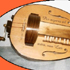
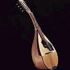
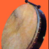
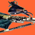

Piccolo compendio di strumenti musicali
Abbiamo qui voluto raccogliere delle informazioni interessanti su alcuni strumenti musicali, probabilmente non tutti così noti al grande pubblico:
 |
la ghironda |
 |
il mandolino |
| la ribeca | |
 |
il bodhran |
| la bombarda | |
| le launeddas | |
 |
la uillean pipe |